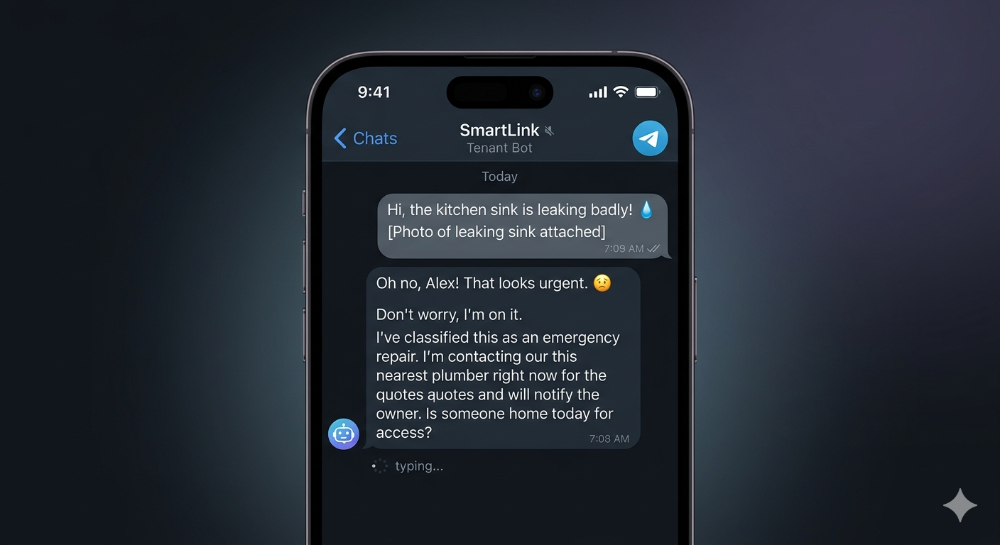
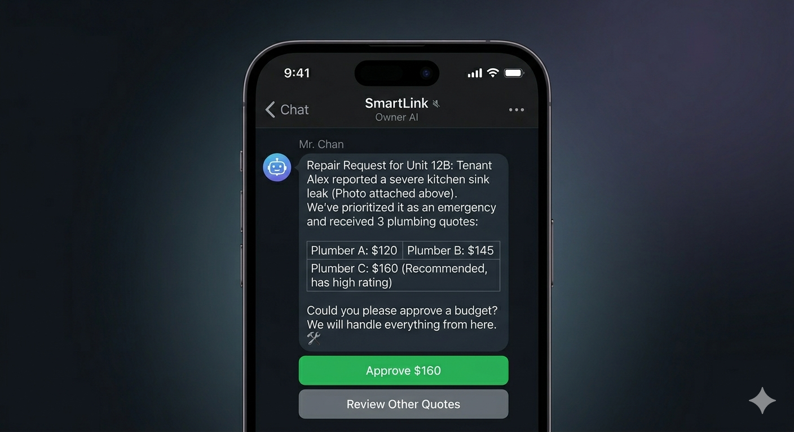
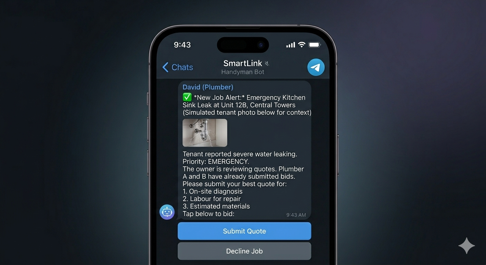

CALLIDUX
.
首頁
EN/繁
SmartLink PropTech AI
PropTech 的
擬人化革命
PropTech's
Human-like Revolution

Platform: Telegram (Simulated)
📱
📊

Platform: WeChat (Simulated)

Platform: Telegram (Simulated)
🔧
從 PropTech 到全域 AI 實踐
From PropTech to Full-Loop AI
🦯
AI 智慧手杖 (HealthTech)
🚗
ECG 疲勞監測方向盤 (Mobility)
🚛
視覺車隊管理 (Computer Vision)